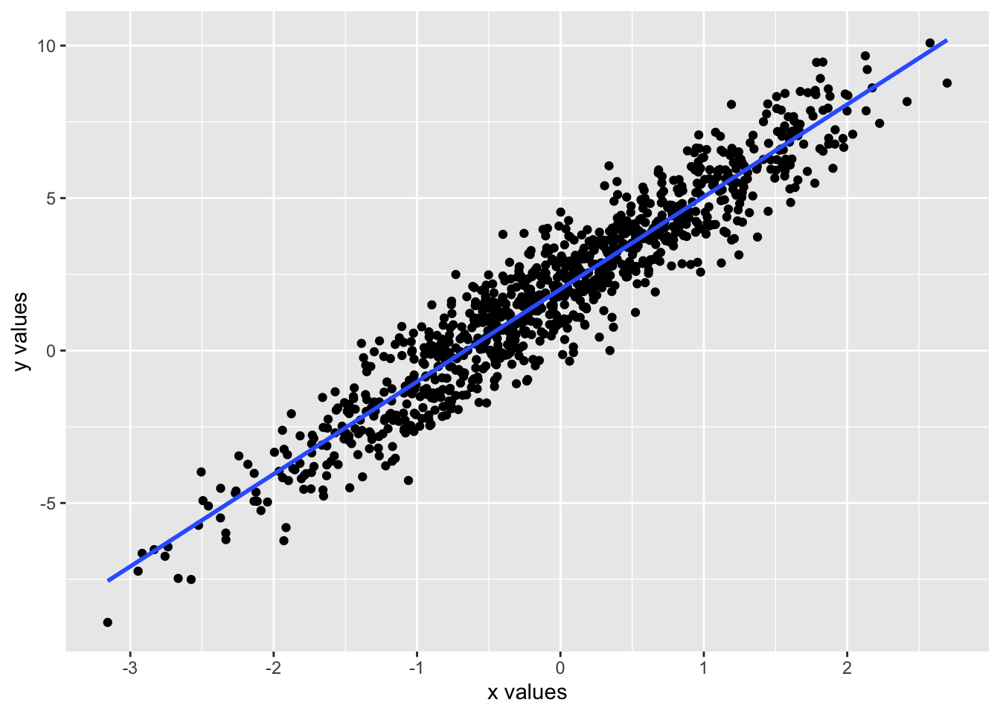
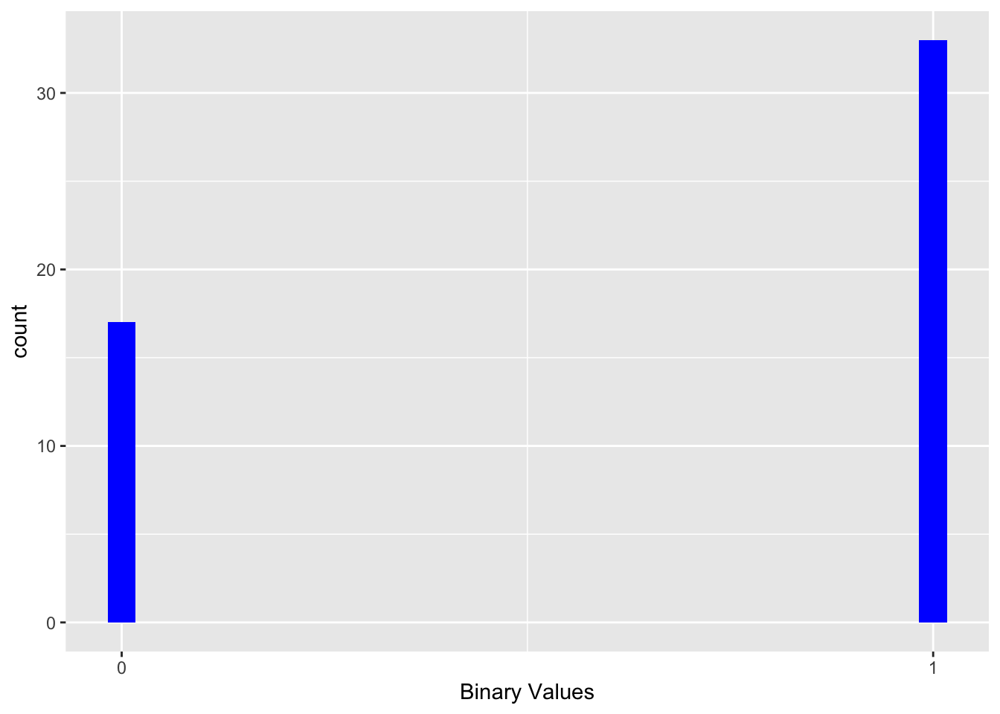

Chapter 16 Generalized Linear Models
16.1 Generalized Linear models
Generalized linear models, GLM, are an extension of linear models where the dependent variable has a normal distribution. We remember that in a linear regression the dependent variable follows the model \(y_i = \beta_0 + \beta_1 x_i\), where \(\beta_0\) is the intercept and the \(\beta_1\) is the coefficient, that is, the slope and the \(x_i\) are the values of x’s. One of the assumptions is that the variation in the values of \(\mu_i\), which are the \(y_i\), have a normal distribution in each x’s and that there is homogeneity of variance.
\[\mu_i=\beta_0+\beta_1x_i\] An important assumption is the assumption that the variation in the \(y_i\) are normally distributed and that there is homogeneity of variance.
\[y_i\sim N\left(\mu_i,\ \epsilon\right)\] We can visualize it with the following figure, where the values of y’s have a normal distribution and that this distribution is homogeneous across the values of x’s.
We show two figures where the y’s are normally distributed (with histogram) and that the distribution is homogeneous across the values of x’s. The second figure shows the relationship between the x’s and the y’s, where the points are the values of the x’s and y’s and the line is the regression line aredistributed moreor less equally around the line.
x=rnorm(1000, mean=0, sd=1)
y=2+3*x+rnorm(length(x), mean=0, sd=1)
df=data.frame(x=x, y=y)
ggplot(df, aes(x=y))+
geom_histogram(colour="white")+
xlab("x values")+
ylab("y values")## `stat_bin()` using `bins = 30`. Pick better value with `binwidth`.ggplot(df, aes(x=x, y=y))+
geom_point()+
geom_smooth(method="lm", se=F)+
xlab("x values")+
ylab("y values")## `geom_smooth()` using formula = 'y ~ x'
16.2 When the dependent variable is not linear
The main problem for a long time has been that the dependent variables does not always normally distributed and consequently did not meet the assumptions of linear regression. The method of linearizing the response variable was developed by Nelder and Wedderburn 1972. Information about the test and its evolution of GLM can be found at https://encyclopediaofmath.org/wiki/Generalized_linear_models. With the advancement of the use of computers in the 80s, it ended up being one of the most used statistical methods.
The term GLM refers to a wide variety of regression models. The assumption in these models is that the response variable \(y_i\) follows a distribution within the family of exponential distributions with an average \(\mu_i\), where a function \(\mu_i^T\beta\) is assumed that is frequently non-linear. To linearize the variable it is necessary to use a “link” to convert the dependent variable, \(y_i\).
16.3 Link available
A link is a function that transforms the dependent variable, \(y_i\), to make it linear with the independent variable, \(x_i\). The link function is a function that connects the expected value of the dependent variable, \(\mu_i\), with the linear combination of the independent variable, \(x_i\). The link function is denoted by \(g\left(\mu_i\right)=\beta_0+\beta_1x_i\).
Here I show a partial list of the different types of “links” for different types of data (or distributions) of the independent variable, \(y_i\). The decision of which transformation or link to use will depend on the data types and their distribution. This is only a subset of avaliable link functions.
| Modelo | Variable_Dep | Link | Variables_Independiente |
|---|---|---|---|
| Linear regressionl | Normal | Identidy | Continuous |
| ANOVA | Normal | Identity | Categorical |
| Logistic Regression | Binomial | Logit | Mix |
| Poisson Regression | Poisson | Log | Mix |
Although the previous distributions are very common, they are not the only links available to transform the data. Here is supplementary information on some other R links that are available in certain packages.
https://www.rdocumentation.org/packages/stats/versions/3.6.2/topics/family
| Familia | Links |
|---|---|
| Gaussian/Normal | identity, log, inverse |
| Binomial | logit, probit, cauchit, log, cloglog |
| Gamma | inverse, identity, log |
| Poisson | log, identity, square root |
| Inverse Gausian | 1/µ^2, inverse, identity, log |
16.4 The assumptions
- The advantage is that now the dependent variable does not have to have a normal distribution.
- Furthermore, untransformed data does not have to have a linear relationship. However, the data must come from a distribution of the exponential family, for example, binomial, Poisson, multinomial, normal, inverse normal, etc.
- GLM does not assume a linear relationship between the dependent and independent variable, but assumes a linear relationship of the transformed dependent variable data and the independent variable. Consequently, a linear relationship is assumed between the binary variable and the explanatory variable after using the transformation with the link, \(logit\left(\pi\right)=\beta_0+\beta_1\cdot x_i\).
- The assumption of homogeneity of variance does not have to be taken into account (necesary for Linear regression).
- The errors have to be independent but it does not matter if they comply with a normal distribution.
16.5 The advantages of GLM
- The parameters are estimated using likelihood (MLE = Maximum Likelihood estimators), not least squares (OLS = ordinary least square). The models are estimated via likelihood, then they optimize the estimators, \(\beta\).
- There is no need to transform the data of the dependent variable to normalize them.
- The selection of the “link” is independent of the dependent variable(s), which makes it easier to create models.
- Tools to evaluate inferences and models are available such as evaluating residuals, confidence intervals, deviation, likelihood ratio test and Akaike Information Criterio index among others.
16.6 Binomial or Bernoulli models
If the variable is binomial, there are only two alternatives, 0 and 1, or dead or alive, with fruit or no fruits, with inflorescence or not. In this case the the binomial distribution is used. The logit function is used as a link function and the binomial/Bernoulli distribution as a probability distribution, the model is called Logistic Regression.
\[\log\frac{q_i}{1-q_i}=\beta_0+\beta_1X_i\] where the distribution is a binomial with \(y_i\sim Binomial\left(q_i\right)\).
#library(wakefield)
x=wakefield::r_sample_binary(50, x = 0:1, prob =c(0.3, 0.7), name = "Binary")
#x
df=as.data.frame(as.factor(x))
#df
ggplot(df, aes(x))+
geom_histogram(fill="blue")+
scale_x_continuous(breaks = c(0, 1))+
xlab("Binary Values")
16.6.1 Gamma Distribution
The gamma distribution is frequently used to take into account variables that have very long and large tails (Heavy-Tailed distributions). The distribution is widely used in the area of econometrics and survival estimates.
The gamma distribution can be parameterized with a “shape term \(\alpha = k\) and the inverse of a scale parameter \(\beta=1/\theta\) which is known as a * parameter *rate**.
\[f\left(x\right)=\frac{\left(\beta^{\alpha}\cdot x^{\alpha-1}e^{-\beta x}\right)}{\Gamma\left(\alpha\right)}\ para\ x>0,\ \ \alpha,\ \beta>0\]
where \(\Gamma\left(\alpha\right)\) is the gamma function. For each integer value \(\Gamma\left(\alpha\right)=\left(\alpha-1\right)!\)
In another word, the gamma distribution is for modeling continuous variables that are always positive and have skewed distributions (long tails).
Examples where the gamma distribution is used
- the time until the moment of failure of a an equipment
- the time until the death of individuals
- the amount of water accumulated in a lake
- the size of unpaid loans
Let’s look at some gamma distributions
Note that in all cases the data is always positive and the distribution has a long tail and none comply with normal distribution. The k=9, theta=0.5 which a quick glance could appear normal has a very long tail, thus a normal distribution would not predict correctly data on the tail.
x = 0:20
curve(dgamma(x, shape=1, scale=2), xlab = "x", ylab = "f(x;k,theta)", 0.4, 20, col = 3, lwd = 3,
main = "Examples of Gamma Distributions")
curve(dgamma(x, shape=2, scale=2), xlab = "x", ylab = "f(x;k,theta)", 0.4, 20, col = 5, lwd = 3,
add = TRUE)
curve(dgamma(x, shape=2, scale=4), xlab = "x", ylab = "f(x;k,theta)", 0.4, 20, col = 6, lwd = 3,
add = TRUE)
curve(dgamma(x,shape =5, scale=1), xlab = "x", ylab = "f(x;k,theta)", 0.4, 20, col = 7, lwd = 3,
add = TRUE)
curve(dgamma(x, shape=9, scale=0.5), xlab = "x", ylab = "f(x;k,theta)", 0.4, 20, col = 1, lwd = 3,
add = TRUE)
curve(dgamma(x, shape=7.5, scale=1), xlab = "x", ylab = "f(x;k,theta)", 0.4, 20, col = 2, lwd = 3,
add = TRUE)
legend("topright", c("k=1,theta=2", "k=2,theta=2", "k=2,theta=4","k=5,theta=1","k=9,theta=0.5", "k=7.5,theta=1.0"), col = c(3, 5,6, 7,1,2), lwd = 3, inset = 0.05)16.7 The basic parameters of the gamma.
Note: The scale is a dispersion index, and the higher the number, the longer the tail.
The average is equal to the multiplication of shape=k by scale = theta, \[average=k\cdot\theta\].
The variance is equal to the multiplication of shape=k by scale = (theta)^2, \[variance=k\cdot\theta^2\]
You can find the formulas to calculate other parameters on the Wikipedia page.
https://en.wikipedia.org/wiki/Gamma_distribution
16.7.1 The inverse Gaussian distribution
In probability theory, the inverse Gaussian distribution is a two-parameter family of continuous probability distributions with support at (0, ∞).
The distribution follows the following form \[f\left(x;µ,\lambda\right)=\sqrt{\frac{\lambda}{2\pi x^3}}\exp\left(-\frac{\lambda\left(x-µ\right)^2}{2µ^2x}\right)\]
where \(x>0\), \(µ>0\), and \(\lambda\). It is the form of distribution and is always greater than zero. The larger the \(\lambda\) (the shape parameter) the more symmetrical the distribution.
As λ tends to infinity, the inverse Gaussian distribution looks like a normal (Gaussian) distribution. The inverse Gaussian distribution is also known as the Wald distribution.
The distribution is used when the population distribution where the lognormal distribution has too heavy a right tail. When referring to heavy tails in statistics, it means that there are more probabilities in this region than a normal distribution. The distribution is used to model non-negative data that is positively skewed. In other words, all values are positive and the tail tends to decrease more slowly than in a normal distribution.
16.7.1.1 Reverse Gaussian history
Historical information on the inverse Gaussian distribution is somewhat limited. The distribution was apparently first derived by Louis Bachelier in 1900, when he was trying to estimate the stock market price for different companies. But the name “Inverse Gaussian” was suggested by Maurice Tweedie in 1945. See this link for more details.
https://en.wikipedia.org/wiki/Normal-inverse_Gaussian_distribution
Examples that could be of this type of distribution
- the time it takes to get to a place.
- the distribution of house prices
- the number of children in a family
- the survival of organisms (survival data)
Note that the distribution is not symmetrical, and the larger the \(\lambda\) the more symmetrical the distribution.
library(SuppDists)
#dinvGauss(x, nu, lambda, log=FALSE)
x = -1:3
curve(dinvGauss(x, nu=.7, lambda=0.2, log=FALSE), xlab = "x", ylab = "f(x;k,theta)", -0.1, 3, col = 3, lwd = 2,
main = "Gráfico distribución Gausiana Inversa")
curve(dinvGauss(x, nu=.7, lambda=1), xlab = "x", ylab = "f(x;k,theta)", -0.1, 3, col = 5, lwd = 2,
add = TRUE)
curve(dinvGauss(x, nu=.7, lambda=3), xlab = "x", ylab = "f(x;k,theta)", -0.1, 3, col = 6, lwd = 2,
add = TRUE)
curve(dinvGauss(x, nu=2, lambda=0.2), xlab = "x", ylab = "f(x;k,theta)", -0.1, 3, col = 7, lwd = 2,
add = TRUE)
curve(dinvGauss(x, nu=2, lambda=1), xlab = "x", ylab = "f(x;k,theta)", -0.1, 3, col = 1, lwd = 2,
add = TRUE)
curve(dinvGauss(x, nu=2, lambda=4), xlab = "x", ylab = "f(x;k,theta)", -0.1, 3, col = 2, lwd = 2,
add = TRUE)
curve(dinvGauss(x, nu=1, lambda=40), xlab = "x", ylab = "f(x;k,theta)", -0.1, 3, col = 4, lwd = 2,
add = TRUE)
legend("topright", c("nu=.7,lambda=0.2", "nu=.7,lambda=1", "nu=.7,lambda=3","nu=2,lambda=0.2","nu=2,lambda=1", "nu=2,lambda=4","nu=1,lambda=40"),
col = c(3, 5,6, 7,1,2,4), lwd = 3, inset = 0.05)16.7.1.2 The parameters of the inverse Gaussian distribution
The average is calculated as follows
\[E\left[X\right]=\frac{1}{\mu}+\frac{1}{\lambda}\]
The variance is calculated in the following way
\[Var\left[X\right]=\frac{1}{\mu\lambda}+\frac{2}{\lambda^2}\]
For other parameters see this link
https://en.wikipedia.org/wiki/Inverse_Gaussian_distribution
16.8 Evaluating distributions
Evaluate a data set to visualize the distribution.
If you need to do regression analysis with data that has an inverse Gaussian distribution the following package is available invGauss and if you want to determine which is the best distribution for your data with the package univariateML there are some functions to help you determine the type of distribution of your data.
I suggest this link.
https://www.cienciadedatos.net/documentos/55_ajuste_distribuciones_con_r.html
library(invGauss)
library(univariateML)
data(d.oropha.rec)
#d.oropha.rec
ggplot(data = d.oropha.rec) +
geom_histogram(aes(x = time, y = after_stat(density)),
bins = 40,
alpha = 0.3, color = "black") +
geom_rug(aes(x = time)) +
stat_function(fun = function(.x){dml(x = .x, obj = mlnorm(d.oropha.rec$time))},
aes(color = "normal"),
size = 1) +
stat_function(fun = function(.x){dml(x = .x, obj = mlinvgauss(d.oropha.rec$time))},
aes(color = "inverse-normal"),
size = 1) +
scale_color_manual(breaks = c("normal", "inverse-normal"),
values = c("normal" = "red", "inverse-normal" = "blue")) +
labs(title = "Distribution of time of development",
color = "Distribución") +
theme_bw() +
theme(legend.position = "bottom")Example of diamond prices from the ggplot2 package
#library(univariateML)
ggplot(data = diamonds) +
geom_histogram(aes(x = price, y = after_stat(density)),
bins = 40,
alpha = 0.3, color = "black") +
geom_rug(aes(x = price)) +
stat_function(fun = function(.x){dml(x = .x, obj = mllnorm(diamonds$price))},
aes(color = "log-normal"),
size = 1) +
stat_function(fun = function(.x){dml(x = .x, obj = mlinvgauss(diamonds$price))},
aes(color = "inverse-normal"),
size = 1) +
scale_color_manual(breaks = c("log-normal", "inverse-normal"),
values = c("log-normal" = "red", "inverse-normal" = "blue")) +
labs(title = "Distribution of diamond prices",
color = "Distribution") +
theme_bw() +
theme(legend.position = "bottom")16.9 Binomial regression
The binomial regression is used when the dependent variable is binary, that is, it has two possible outcomes, 0 or 1, dead or alive, success or failure, etc. The binomial distribution is used as a probability distribution and the logit function is used as a link function. The model is called Logistic Regression.
\[\log\frac{q_i}{1-q_i}=\beta_0+\beta_1X_i\] where the distribution is a binomial with \(y_i\sim Binomial\left(q_i\right)\).
Here let use the data from Karn and Penrose of the survival or death on infants and birth weight.
- Survival: 1 = Infant survived, 0 = the Infant died
- Weigth_lb = The weigth of the infant in pounds at birth.
library(readr)
Karn_Penrose_infant_survivorship <- read_csv("Data/Karn_Penrose_infant_survivorship.csv")
Infant= Karn_Penrose_infant_survivorship
head(Infant)| row_num | Survival | Weigth_lb | Gestation_Time_days |
|---|---|---|---|
| 1 | 0 | 1 | 155 |
| 2 | 0 | 1 | 165 |
| 3 | 0 | 1 | 165 |
| 4 | 0 | 5.5 | 170 |
| 5 | 0 | 1 | 180 |
| 6 | 0 | 1.5 | 180 |
Visualize the data
- The data is not normally distributed.
- The data is binary, 0 or 1.
- The regression line is not linear and is probability
- The 95% confidence interval is shown in the graph.
ggplot(Infant, aes(x=Weigth_lb, y=Survival))+
geom_jitter(width=0.1, height = 0.1)+ # point represents an infants outcome
geom_smooth(method="glm", method.args=list(family="binomial"), se=T)+
xlab("Weight in pounds")+
ylab("Probability of Survival")+
scale_x_continuous(breaks = seq(0, 14, by = 1))Creating the binomial model
##
## Call:
## glm(formula = Survival ~ Weigth_lb, family = binomial, data = Infant)
##
## Coefficients:
## Estimate Std. Error z value Pr(>|z|)
## (Intercept) -1.76189 0.22628 -7.786 6.91e-15 ***
## Weigth_lb 0.67591 0.03825 17.670 < 2e-16 ***
## ---
## Signif. codes: 0 '***' 0.001 '**' 0.01 '*' 0.05 '.' 0.1 ' ' 1
##
## (Dispersion parameter for binomial family taken to be 1)
##
## Null deviance: 2199.2 on 4051 degrees of freedom
## Residual deviance: 1833.2 on 4050 degrees of freedom
## AIC: 1837.2
##
## Number of Fisher Scoring iterations: 6Second example of logistic regression
Explanatory variables
- age= 201 particpants and their age
- sex:0 = female 1= male
- num_dependents: number of dependents
- income: income in categories
- descriminatory buyer: a person who regularly searches for differentiated products at grocery stores
- Edu_none: 1 = less or equal to junior school and 0 = otherwise
- Edu_high: 1 = has a high school degree, 0 = has less than high school
- edu_bach: 1 = has a bachellor degree, 0= has less than a bachellor degree
Response variable
- milk_local: ready to buy local milk? 0 = no, 1 = yes
library(readxl)
Milk_probit_logit <- read_excel("Data/Milk_probit_logit.xlsx")
names(Milk_probit_logit)## [1] "age" "sex" "num_dependents"
## [4] "descriminatory_buyer" "income" "Edu_none"
## [7] "Educ_high" "Educ_bacj" "milk_local"milk_model_logit=glm(milk_local~age+sex+num_dependents+ descriminatory_buyer+
income+ Edu_none+ Educ_high+ Educ_bacj, family=binomial(link=logit), data=Milk_probit_logit)
summary(milk_model_logit)##
## Call:
## glm(formula = milk_local ~ age + sex + num_dependents + descriminatory_buyer +
## income + Edu_none + Educ_high + Educ_bacj, family = binomial(link = logit),
## data = Milk_probit_logit)
##
## Coefficients:
## Estimate Std. Error z value Pr(>|z|)
## (Intercept) -0.918174 0.878275 -1.045 0.29582
## age 0.025989 0.009741 2.668 0.00763 **
## sex 0.662518 0.339971 1.949 0.05133 .
## num_dependents 0.260138 0.131064 1.985 0.04716 *
## descriminatory_buyer -0.817777 0.328015 -2.493 0.01266 *
## income -0.450150 0.150804 -2.985 0.00284 **
## Edu_none 0.027829 1.090379 0.026 0.97964
## Educ_high 0.663716 0.589243 1.126 0.26000
## Educ_bacj 1.363096 0.578054 2.358 0.01837 *
## ---
## Signif. codes: 0 '***' 0.001 '**' 0.01 '*' 0.05 '.' 0.1 ' ' 1
##
## (Dispersion parameter for binomial family taken to be 1)
##
## Null deviance: 276.54 on 199 degrees of freedom
## Residual deviance: 233.02 on 191 degrees of freedom
## AIC: 251.02
##
## Number of Fisher Scoring iterations: 4The same model with a “probit” link function
milk_model_probit=glm(milk_local~age+sex+num_dependents+ descriminatory_buyer+
income+ Edu_none+ Educ_high+ Educ_bacj, family=binomial(link=probit), data=Milk_probit_logit)
summary(milk_model_probit)##
## Call:
## glm(formula = milk_local ~ age + sex + num_dependents + descriminatory_buyer +
## income + Edu_none + Educ_high + Educ_bacj, family = binomial(link = probit),
## data = Milk_probit_logit)
##
## Coefficients:
## Estimate Std. Error z value Pr(>|z|)
## (Intercept) -0.56593 0.52262 -1.083 0.27887
## age 0.01554 0.00577 2.693 0.00708 **
## sex 0.40903 0.20394 2.006 0.04489 *
## num_dependents 0.15258 0.07768 1.964 0.04950 *
## descriminatory_buyer -0.48533 0.19675 -2.467 0.01363 *
## income -0.26201 0.08831 -2.967 0.00301 **
## Edu_none 0.02380 0.64862 0.037 0.97073
## Educ_high 0.40083 0.34670 1.156 0.24763
## Educ_bacj 0.79879 0.33676 2.372 0.01769 *
## ---
## Signif. codes: 0 '***' 0.001 '**' 0.01 '*' 0.05 '.' 0.1 ' ' 1
##
## (Dispersion parameter for binomial family taken to be 1)
##
## Null deviance: 276.54 on 199 degrees of freedom
## Residual deviance: 233.34 on 191 degrees of freedom
## AIC: 251.34
##
## Number of Fisher Scoring iterations: 4Evaluating assumptions of the binomial model
You need to check for linearity, independence of errors, homoscedasticity, overdispersion and normality of residuals.
- The response variable is binary
- Check for the homoscedasticity of the residuals
- Check for overdispersion
In this first figure we have the Cook’s distance, an index of outliers and influential points. The values are in the order of the data set, thus a point a position 100, is the 100th point in the data set. The values are the Cook’s distance, the larger the value the more influential the point is. The red line is the threshold value of 4/n, where n is the number of observations. Points above the line are influential points.
Good news, the values are not extremely high, thus there are no influential points.
library(ggResidpanel) # a package to look at residuals
resid_panel(milk_model_logit, plots = "cookd")
The easiest way to check dispersion in a model is to calculate the ratio of the residual deviance to the residual degrees of freedom.
Going back to the original output of the model, we can calculate the dispersion as follows
Coefficients:
Estimate Std. Error z value Pr(>|z|)
(Intercept) -0.918174 0.878275 -1.045 0.29582
age 0.025989 0.009741 2.668 0.00763
sex 0.662518 0.339971 1.949 0.05133 .
num_dependents 0.260138 0.131064 1.985 0.04716 *
descriminatory_buyer -0.817777 0.328015 -2.493 0.01266 *
income -0.450150 0.150804 -2.985 0.00284
Edu_none 0.027829 1.090379 0.026 0.97964
Educ_high 0.663716 0.589243 1.126 0.26000
Educ_bacj 1.363096 0.578054 2.358 0.01837 *
—
Signif. codes: 0 ‘’ 0.001 ‘’ 0.01 ‘’ 0.05 ‘.’ 0.1 ‘ ’ 1
(Dispersion parameter for binomial family taken to be 1)
Null deviance: 276.54 on 199 degrees of freedomResidual deviance: 233.02 on 191 degrees of freedom AIC: 251.02
NOte we have the residual variance at 233.02 on 191 df. The dispersion is calculated as follows
## [1] 1.219975The dispersion is 1.22, which is greater than 1, thus there is some overdispersion.
## [1] 0.02051796The p value of the Chi square test returns a p = 0.02, which suggest that there is some overdisersion.
16.10 Poisson regression
A poisson regression is used when the dependent variable is a count variable, that is, the number of events that occur in a fixed period of time. The Poisson distribution is used as a probability distribution and the log function is used as a link function. The model is called Poisson Regression.
\[\log\left(\lambda_i\right)=\beta_0+\beta_1X_i\] where the distribution is a Poisson with \(y_i\sim Poisson\left(\lambda_i\right)\).
Here let use the data from the number of accidents in a city and the number of cars in the city.
- Brooklyn_Bridge: The number cyclist on the Brooklyn Bridge on each day.
- Precipitation = The precipitation in inches on that day
| Date | Day | High_Tem_F | Low_Temp_F | Precipitation | Brooklyn_Bridge | Manhattan_Bridge | Williamsburg_Bridge | Queensboro_Bridge | Total |
|---|---|---|---|---|---|---|---|---|---|
| 1-Apr | Friday | 78.1 | 66 | 0.01 | 1.7e+03 | 3.13e+03 | 4.12e+03 | 2.55e+03 | 1.15e+04 |
| 2-Apr | Saturday | 55 | 48.9 | 0.15 | 827 | 1.65e+03 | 2.56e+03 | 1.88e+03 | 6.92e+03 |
| 3-Apr | Sunday | 39.9 | 34 | 0.09 | 526 | 1.23e+03 | 1.7e+03 | 1.31e+03 | 4.76e+03 |
| 4-Apr | Monday | 44.1 | 33.1 | 0.47 | 521 | 1.07e+03 | 1.44e+03 | 1.31e+03 | 4.34e+03 |
| 5-Apr | Tuesday | 42.1 | 26.1 | 0 | 1.42e+03 | 2.62e+03 | 3.08e+03 | 2.36e+03 | 9.47e+03 |
| 6-Apr | Wednesday | 45 | 30 | 0 | 1.88e+03 | 3.33e+03 | 3.86e+03 | 2.85e+03 | 1.19e+04 |
Visualize the data
- The data is not normally distributed.
- The data is a count variable.
- The regression line is not linear and is count (number of cylcist)
- The 95% confidence interval is shown in the graph.
ggplot(NY, aes(x=Precipitation, y=Brooklyn_Bridge))+
geom_jitter(width=0.01, height = 0.1)+ # point represents a count of number of cyclist for a specific day
geom_smooth(method="glm", method.args=list(family="poisson"), se=T)+
xlab("Precipitation in inches")+
ylab("Number of cyclist")+
scale_x_continuous(breaks = seq(0, 2, by = 0.1))Creating the Poisson model
##
## Call:
## glm(formula = Brooklyn_Bridge ~ Precipitation, family = poisson,
## data = NY)
##
## Coefficients:
## Estimate Std. Error z value Pr(>|z|)
## (Intercept) 8.086430 0.001378 5868.99 <2e-16 ***
## Precipitation -0.565548 0.006023 -93.91 <2e-16 ***
## ---
## Signif. codes: 0 '***' 0.001 '**' 0.01 '*' 0.05 '.' 0.1 ' ' 1
##
## (Dispersion parameter for poisson family taken to be 1)
##
## Null deviance: 91743 on 197 degrees of freedom
## Residual deviance: 81450 on 196 degrees of freedom
## (17 observations deleted due to missingness)
## AIC: 83389
##
## Number of Fisher Scoring iterations: 5Testing for overdispersion of Poisson model. In this case the model is highly obverdisperded. The dispersion is 418 and the p-value is p < 0.001.
## Loading required package: car## Loading required package: carData##
## Attaching package: 'car'## The following object is masked from 'package:dplyr':
##
## recode## The following object is masked from 'package:purrr':
##
## some## Loading required package: lmtest## Loading required package: zoo##
## Attaching package: 'zoo'## The following objects are masked from 'package:base':
##
## as.Date, as.Date.numeric## Loading required package: sandwich##
## Overdispersion test
##
## data: NY_model
## z = 4.8057, p-value = 7.71e-07
## alternative hypothesis: true dispersion is greater than 1
## sample estimates:
## dispersion
## 418.239316.11 Negative binomial regression
A negative binomial regression is used when the dependent variable is a count variable and that the data suggests overdipersion. Overdispersion is when the variance is greater than the mean. The Poisson distribution is used as a probability distribution and the log function is used as a link function. The model is called Negative Binomial Regression.
\[\log\left(\lambda_i\right)=\beta_0+\beta_1X_i\] where the distribution is a negative binomial with \(y_i\sim NegBinomial\left(\lambda_i\right)\).
We will start by calculating the mean and vaiance of the above data set and detemrine if there is overdisperion
The function required dispersiontest is available in the package AER. The function will return the dispersion parameter and the p-value. If the p-value is less than 0.05, then there is overdispersion.
Note that the alpha is very large and the p-value is less than 0.05, which indicates that there is overdispersion. We will now create the negative binomial model. We will use the MASS library and the function glm.nb to create the model. The function is used to create a negative binomial model. The function is used in the same way as the glm function, but the family is set to negative binomial.
library(MASS)
ggplot(NY, aes(x=Precipitation, y=Brooklyn_Bridge))+
geom_jitter(width=0.01, height = 0.1)+
geom_smooth(method="glm.nb", se=T)+
xlab("Precipitation in inches")+
ylab("Number of cyclist")+
scale_x_continuous(breaks = seq(0, 2, by = 0.1))NY_model_nb=MASS::glm.nb(Brooklyn_Bridge ~ Precipitation, data=NY)
summary(NY_model_nb) # note that theta is a the measure of dispersion##
## Call:
## MASS::glm.nb(formula = Brooklyn_Bridge ~ Precipitation, data = NY,
## init.theta = 6.243688849, link = log)
##
## Coefficients:
## Estimate Std. Error z value Pr(>|z|)
## (Intercept) 8.08310 0.03105 260.33 < 2e-16 ***
## Precipitation -0.53141 0.10670 -4.98 6.35e-07 ***
## ---
## Signif. codes: 0 '***' 0.001 '**' 0.01 '*' 0.05 '.' 0.1 ' ' 1
##
## (Dispersion parameter for Negative Binomial(6.2437) family taken to be 1)
##
## Null deviance: 226.06 on 197 degrees of freedom
## Residual deviance: 203.38 on 196 degrees of freedom
## (17 observations deleted due to missingness)
## AIC: 3360.2
##
## Number of Fisher Scoring iterations: 1
##
##
## Theta: 6.244
## Std. Err.: 0.613
##
## 2 x log-likelihood: -3354.199We interpret the results as follows
- The precipitation has a negative effect on the number of cyclist (negative sign). With precipitation (exp(coef) = -0.53) which states that there is 47% decrease in the number of cyclist for each inch of precipitation.
We can reconvert the coefficient to a positive value by taking the exponential of the coefficient.
## (Intercept) Precipitation
## 3239.274773 0.587776In this case to evaluate overdispersion in the negative binomial model we use the function odTest from the package pscl. The function will return the dispersion parameter and the p-value. If the p-value is less than 0.05, then there is overdispersion.
## Classes and Methods for R originally developed in the
## Political Science Computational Laboratory
## Department of Political Science
## Stanford University (2002-2015),
## by and under the direction of Simon Jackman.
## hurdle and zeroinfl functions by Achim Zeileis.## Likelihood ratio test of H0: Poisson, as restricted NB model:
## n.b., the distribution of the test-statistic under H0 is non-standard
## e.g., see help(odTest) for details/references
##
## Critical value of test statistic at the alpha= 0.05 level: 2.7055
## Chi-Square Test Statistic = 80031.1386 p-value = < 2.2e-1616.11.1 Comparing dispersion models
Comparing the dispersion of a Poisson and a negative binomial model. The approach is to use a likelyhood ratio test. Note the fitted log-likelihood of the NB model (-1677.1) is much large/better than the Poisson model (-41692.7). The p-value is less than 0.05, thus the negative binomial model is better than the Poisson model.
# Calculate the likelihood ratio statistic
likelihood_ratio <- 2 * (logLik(NY_model_nb) - logLik(NY_model))
logLik(NY_model_nb) # the log likelihood of the negative binomial model## 'log Lik.' -1677.1 (df=3)## 'log Lik.' -41692.67 (df=2) # Degrees of freedom (df) is the difference in the number of parameters
df <- length(coef(NY_model_nb)) - length(coef(NY_model))
# Perform the chi-squared test
p_value <- 1 - pchisq(likelihood_ratio, df)
# Print the p-value
print(p_value)## 'log Lik.' 0 (df=3)16.11.2 Alternative approach to compare the Poisson and the negative binomial model.
You can also use the function lrtest from the package lmtest to perform the likelihood ratio test. The function will return the likelihood ratio test statistic and the p-value. If the p-value is less than 0.05, then the negative binomial model is better than the Poisson model.
## Warning in modelUpdate(objects[[i - 1]], objects[[i]]): original model was of
## class "negbin", updated model is of class "glm"| #Df | LogLik | Df | Chisq | Pr(>Chisq) |
|---|---|---|---|---|
| 3 | -1.68e+03 | |||
| 2 | -4.17e+04 | -1 | 8e+04 | 0 |
Overlaying the Poisson and the negative binomial models
NEED To FIND a better example
ggplot(NY, aes(x=Precipitation, y=Brooklyn_Bridge))+
geom_jitter(width=0.01, height = 0.1)+
geom_smooth(method="glm", method.args=list(family="poisson"), se=T, color="red")+
geom_smooth(method="glm.nb", se=T, color="blue")+
xlab("Precipitation in inches")+
ylab("Number of cyclist")+
scale_x_continuous(breaks = seq(0, 2, by = 0.1))